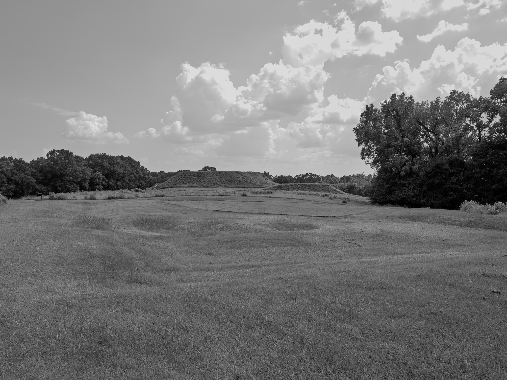
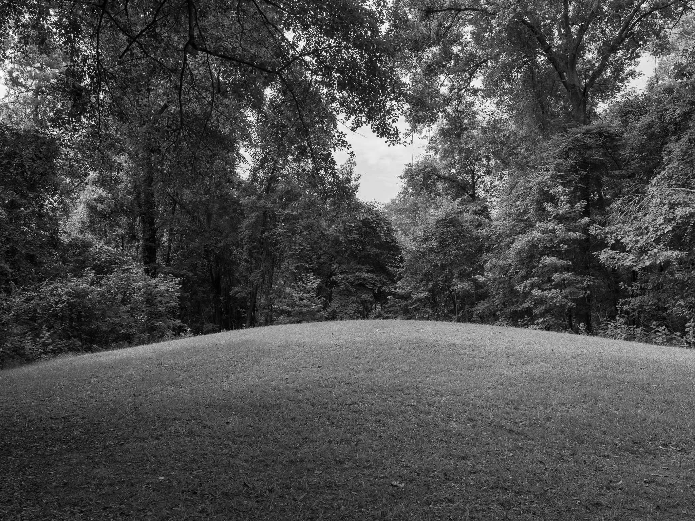
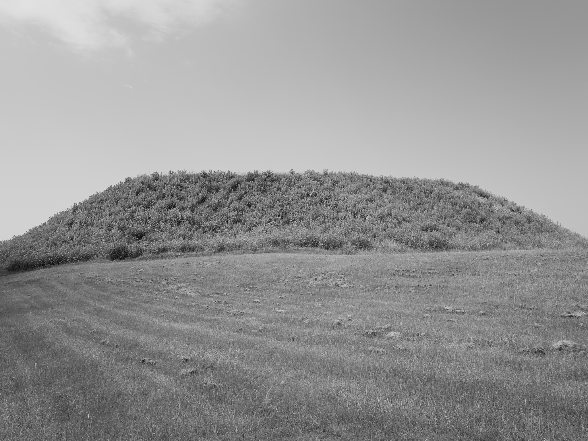
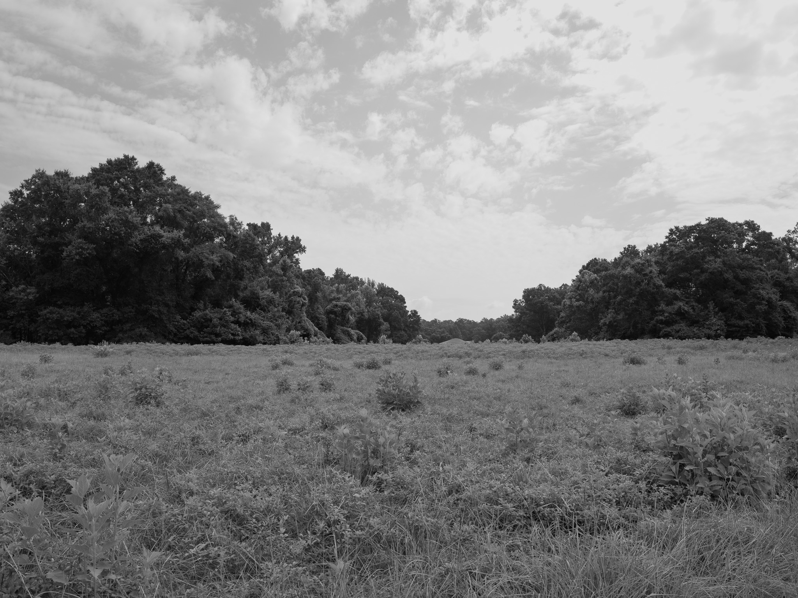
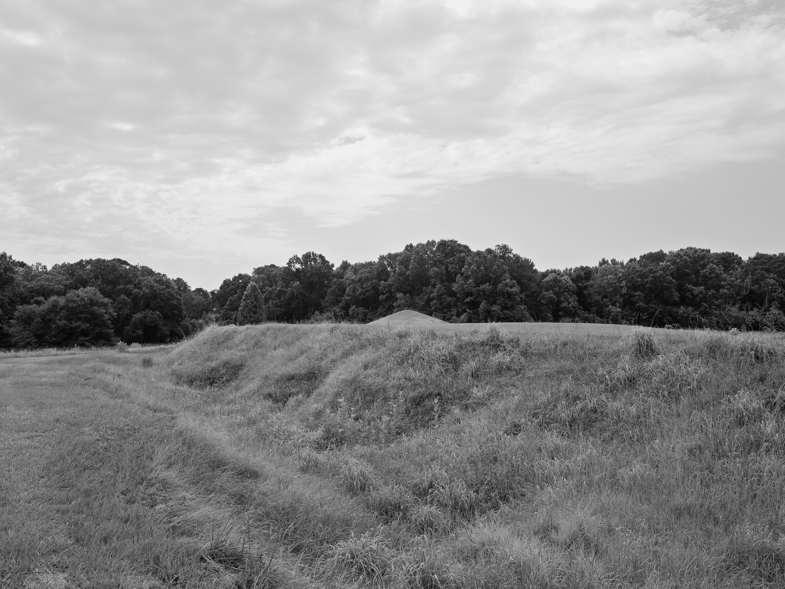

Public Lands Institute
Map
Images
Archive
About
Ocmulgee Mounds National Historical Park
GA

Ocmulgee Mounds National Historical Park 1 · 2026-07-04
_DSF3787.jpg

Ocmulgee Mounds National Historical Park 2 · 2026-07-05
_DSF3792.jpg

Ocmulgee Mounds National Historical Park 3 · 2026-07-05
_DSF3794.jpg

Ocmulgee Mounds National Historical Park 4 · 2026-07-05
_DSF3798.jpg

Ocmulgee Mounds National Historical Park 5 · 2026-07-05
_DSF3807.jpg
View all 5 images →
← Chattahoochee National Forest
High Falls State Park →